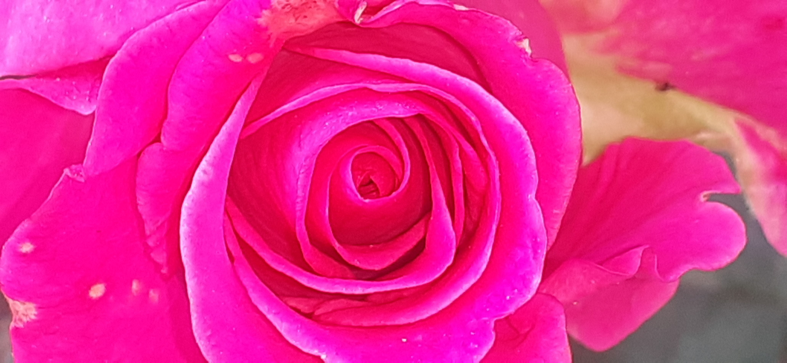

|  |
PRUORSPELE !!!!!!!THIS IS A PICTURE OF PRUORSPELE.THIS PICTURE IS CLICKED BY MR.AARYAN SINGH SACHAN. THE specialit OF THIS FLOWER IS THIS FLOWER HAS A PURPLE OUTLAYER .WHITH A PINK AND RED ROSE.THIS FLOWER IS MOSTLY FOUND IN NEPAL. THIS FLOWER IS USED TO MAKE YOUR DAY fabulous . IT IS ALSO GIVEN AS A BIRTHDAY PRESENT AS ITS SMELL IS FANTASTIS . YOU CAN ALSO UAE THIS FLOWER IN THE GARDEN ,BALKANI OR IN YOUR BED ROOM.THIS IS ALSO USED AS A TraditionaL MEDECINE TO CURE DISEASA |